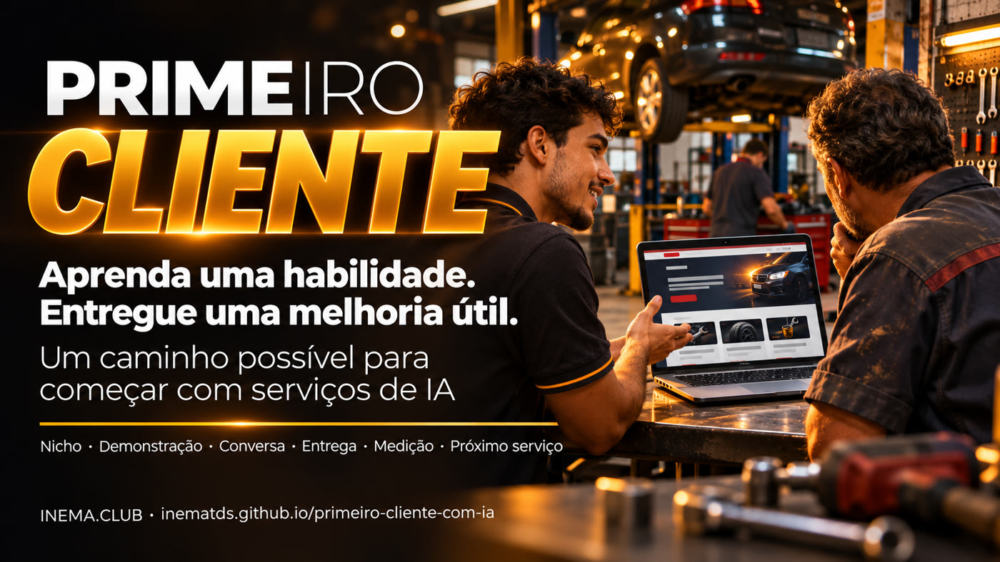
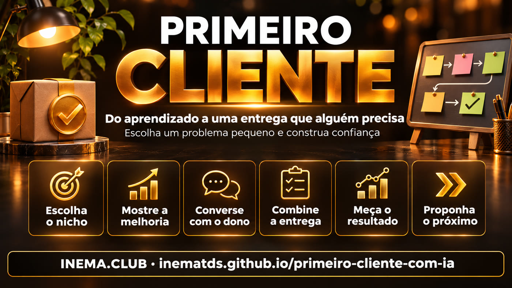

The First Client with AI helps you start with a small problem at a business near you. One demo, one conversation, and a delivery you can take responsibility for.

A free toolkit for people learning artificial intelligence who want to try offering their first service. You choose a type of client, demonstrate a small improvement, talk with the person in charge, and measure the results before proposing the next project. The templates help you get started with a clear scope. You need an AI tool you know how to use and a willingness to talk with a business; you don’t need to install this toolkit.

I’ve been looking at how an influencer presents their services, videos, and the community around them. This approach offers a possible first step for someone learning AI who isn’t selling yet: show a small solution before offering a larger project.
The person sees what they can improve in their own business.
You agree on a deliverable you know how to execute and test.
The next service comes from a need you’ve heard about and results you’ve tracked.
The workshop is a hypothetical example. You can choose another business you know.
Use the niche worksheet. Look for businesses with a visible need, investment in their operations, and an accessible decision-maker.
Done when you can say who you serve and what problem you’ll investigate.
Open this step’s template →Hypothetical example: a workshop page with services and contact options that work well on mobile. Keep the sample’s scope limited and identify it as an unofficial demo.
Open the workshop before-and-after demo →
Done when the information has been checked and the buttons have been tested.
Show the improvement, listen, and, if there’s interest, present the price, timeline, costs, and acceptance criteria. The sample doesn’t obligate anyone to buy and isn’t the same as implementation.
Done when there’s a conversation and, before doing the work, a clear agreement on scope.
Open this step’s template →Ask what happens after someone gets in touch. Suggest a small change and track one metric before and after. Offer a monthly fee only for defined ongoing tasks.
Done when you have a metric, an owner, and an honest comparison.
Open this step’s template →“Hi, I’m [name]. I noticed it’s hard to find the repair shop’s contact information on a phone. I put together a small demo showing how to make it easier to get in touch. It’s an unofficial sample. Can I show it to whoever’s in charge of the website?”
Use only a problem you’ve observed. Respect their response, and don’t send mass messages.
An explainer with the steps and a short video to get started with a small improvement. Fictional workshop, no income guarantee.
Templates in Portuguese, ready to adapt. The ZIP includes eight worksheets and two CSV spreadsheets, which open in Excel, LibreOffice, or Google Sheets. To use them: download the ZIP, extract the folder, and open the .md worksheets in a text editor. Open the CSV files in your spreadsheet app. The demo and templates are in Portuguese.
Open text template →
Open text template →
Open text template →
Open text template →
Open text template →
Open text template →
Open text template →
Open text template →
CSV spreadsheet to record contacts and next steps.
CSV spreadsheet to track time to response.
Check the content, links, mobile navigation, and where requests go. Agree on the domain, hosting, maintenance, and who receives the inquiries. Don’t use real customer data in a demo.
The kit is educational and doesn’t send messages, generate websites, or install automations on its own. It doesn’t guarantee a client, income, or a sales timeline. The proposal outline helps you align expectations and doesn’t replace an appropriate contract.
Source: transcript provided by Nei, with no confirmed authorship or URL. Claims of gains and percentages from the original were not used as promises. Source and limitations · Reference: testing forms · Reference: market research